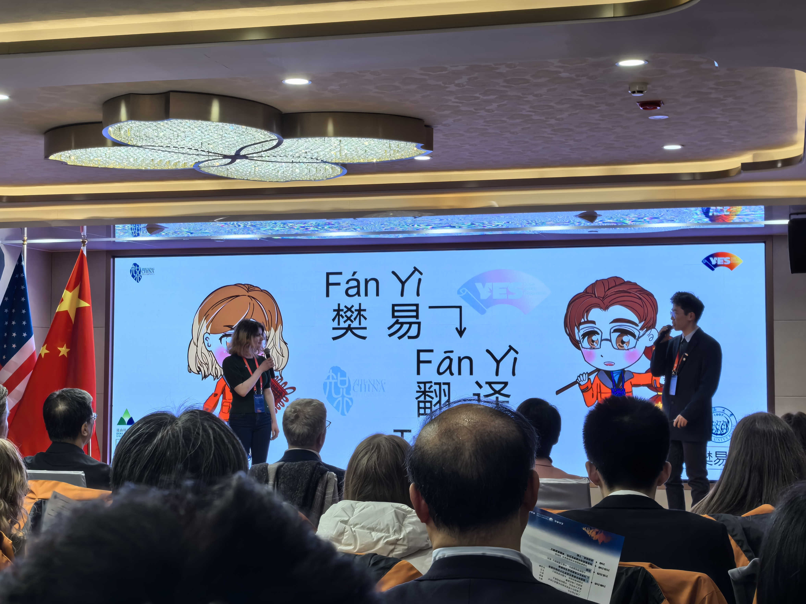
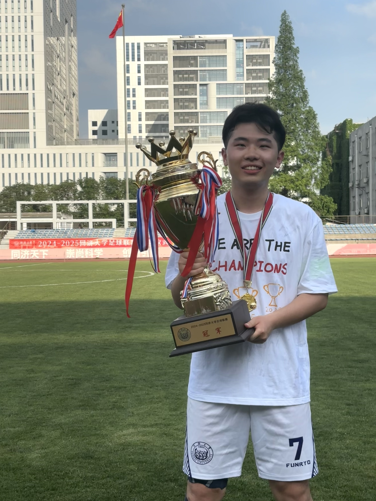
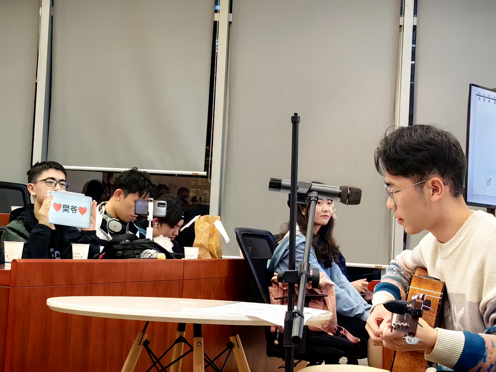

Miscellaneous
Activities
ZhiXing China: Shanghai Discovery, Jan. 2024
On behalf of Chinese students, deliver a speech on the topic of “Artificial Intelligence and Modern Life” in front of the Minister and Vice Minister of Education of China, U.S. Consul General in Shanghai and Vice Mayor of Shanghai.
|  | Deliver a speech about “AI and Modern Life” |
The president of Tongji Football Association, Sep. 2023 - Jun. 2024
Class President of the 2021 Information Management and Information System Class, Sep. 2021 - Jun. 2025
Hobbies
Soccer
Captain of the soccer team of the School of Economics and Management in Tongji and National Level II Referee in China.
Win the champion of Tongji University Championship Cup and the third place in FA Cup in 2022-2023 and the third place of Tongji University Football League and the champion of FA Cup in 2023-2024.
Selected by the school soccer team to participate in the 17th Shanghai Games for the Shuttlecock Team Skills Competition, win the Shanghai runner-up title.
 |
Won the champion of Tongji University Championship Cup in 2022-2023 |
 |
Won the third place of Tongji University Football League in 2023-2024 |
|  | Won the champion of Tongji University Football League in 2024-2025 |
Go (Amateur 5d)
Table Tennis (Team Second Place, Singles Fifth Place in the City-Level Competition)
Piano (Amateur Level 10)
Guitar
|  | Play the song “Cheng Aiying” in the class party |